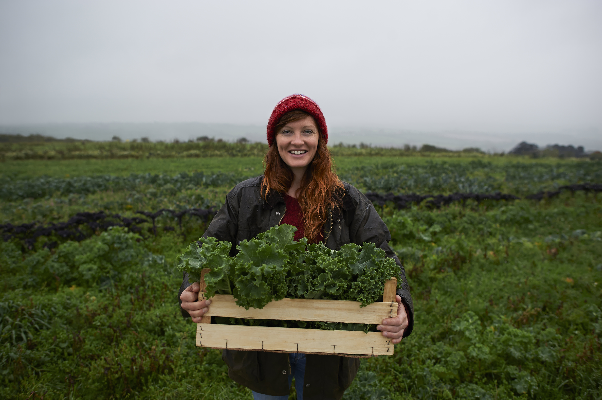
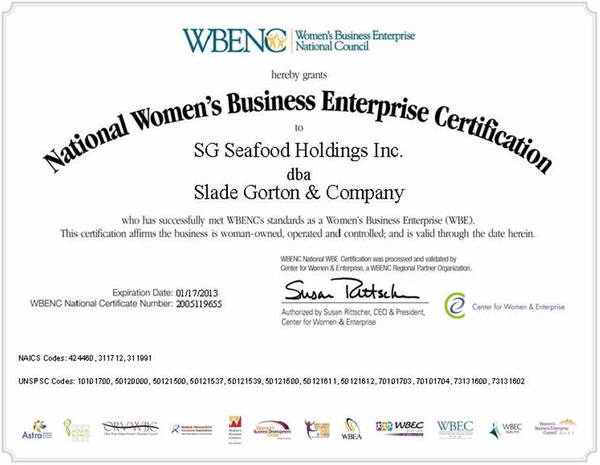

The first way in which gender equality is already being promoted is through empowering smallholders. Programs promoting women's empowerment have led to a 55 percent improvement in food security in developing countries. Smallholders are small scale farmers with land not more than 25 acres. This promoting of food security has been the direct cause of many women's empowerment programs.

There have been many efforts to make it easier for women to do business. Startup assistance programs and venture capital funds regularly favor women owned businesses. By making it easier for women to do business, women are more likely to support their family more easily and are able to be independent of their families as well. This independence provides more freedom to women and allows the future generations to live as equals of other genders.

However, things are not without any resistance. Critics say women want to be equal until it comes to giving up seats on the bus or being able to enter an establishment first before others. The concept of independence only applies when they want to do what they want without worrying about their families. Such critics are very vocal and show how the concept of gender equality may not be as straight forward as it seems.